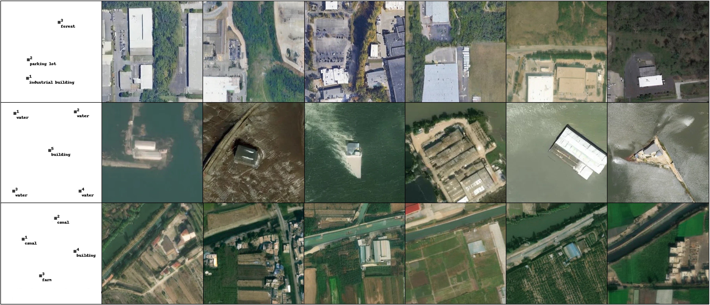
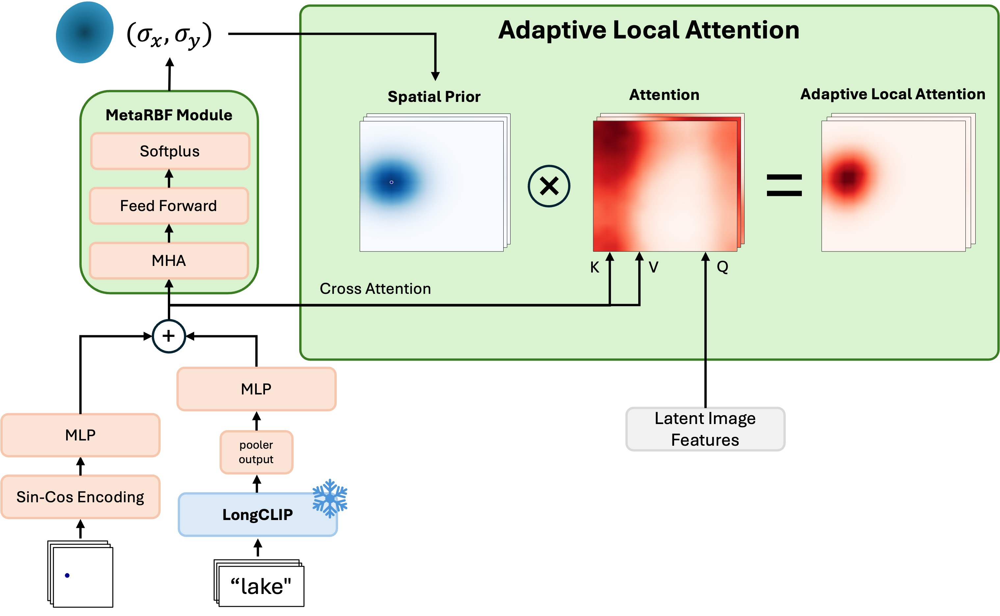

We propose TerraDiT, a diffusion transformer for text-to-satellite image generation with point-based control, enabling semantically rich and spatially precise generation using only point locations and textual descriptions instead of dense pixel-level maps. TerraDiT introduces an adaptive local attention mechanism to incorporate point queries effectively, achieving state-of-the-art performance while providing a flexible, annotation-efficient, and computationally simple framework for controllable satellite image synthesis.

Point prompting. Given only a handful of labeled points (leftmost column)—e.g. industrial building, parking lot, forest; water; or canal, building, farm—TerraDiT generates diverse, spatially consistent satellite scenes that honor each point's semantic label and location.
At the core of TerraDiT is Adaptive Local Attention (ALA), a conditioning mechanism that incorporates point queries into the diffusion transformer effectively. A point (Sin-Cos encoded) and its text caption (from a frozen LongCLIP encoder) are fused and passed through a MetaRBF module that predicts a per-point spatial spread (σx, σy). The resulting Gaussian spatial prior modulates the cross-attention between the latent image features (queries) and the conditioning tokens (keys/values), so each point attends locally to the image tokens in its neighborhood. This injects a spatial inductive bias that yields semantically rich, spatially precise generation from sparse point supervision alone—annotation-efficient and computationally simple while achieving state-of-the-art fidelity.

The Adaptive Local Attention (ALA) block. A point and its caption are encoded and fused, then the MetaRBF module predicts (σx, σy) to form a spatial prior that modulates cross-attention over the latent image features.
The scene is specified by a few labeled points—each a location paired with a short text label (e.g. industrial building, water, canal). Points are Sin-Cos encoded and labels embedded via frozen LongCLIP, together specifying what to generate and where without any dense pixel-level maps.
Adaptive Local Attention injects the point queries into the diffusion transformer: each point attends locally to the image tokens around its location, while text conditions the model through cross-attention—incorporating point cues precisely and efficiently.
The conditioned tokens drive a scalable diffusion transformer denoising process to produce the final satellite image.

Each row shows a set of labeled point prompts (leftmost column) and multiple satellite images generated by TerraDiT from them, spanning diverse land-cover types—residential, water, forest, farmland, canal, sand, highway, golf course, railroad, and sport field.
PLACEHOLDER — replace with your evaluation setup. Bold is best, underline is second-best. T = text, P = points.
| Model | Condition | FID↓ | sFID↓ | LPIPS↓ |
|---|---|---|---|---|
| GeoSynth | T | 45.59 | 18.88 | 0.5413 |
| Text2Earth | T | 25.93 | 5.09 | 0.4269 |
| TerraDiT-α-XL (Ours) | T | 14.21 | 5.13 | 0.3972 |
| TerraDiT-Σ-XL (Ours) | T+P | 12.01 | 5.09 | 0.3779 |
PLACEHOLDER — verify these numbers against the paper (values shown are carried over from the TerraDiT-Ω comparison table for reference).
@article{sastry2026terradit,
title = {TerraDiT: Point-Conditioned Diffusion Transformer for Satellite Image Synthesis},
author = {Sastry, Srikumar and Cher, Dan and Wei, Brian and Dhakal, Aayush and
Khanal, Subash and Gupta, Dev and Jacobs, Nathan},
journal = {arXiv preprint arXiv:2603.02172},
year = {2026}
}